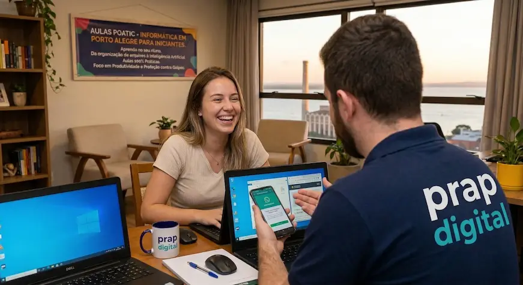

Quanto custa uma aula particular de informática em Porto Alegre?
A hora avulsa é a partir de R$ 90,00. Como cada aluno tem um objetivo diferente, as aulas podem ser presenciais em domicílio ou online pelo Google Meet.
A PRAP Digital ensina Informática e ChatGPT em Porto Alegre através de aulas particulares a domicílio (na sua casa) e aulas EAD para todo o Brasil. Você aprende a usar computador, celular e Inteligência Artificial Generativa (ChatGPT e Gemini) na prática, com foco em produtividade e proteção contra golpes do Pix e do WhatsApp — mesmo começando do zero.

Educação Digital
Treinamento em ChatGPT
Responda rapidamente e agende sua avaliação gratuita para descobrir o foco ideal das suas aulas particulares.
Sinto insegurança ao usar o Pix, aplicativos de banco e não sei o que fazer para evitar o golpe do Pix ou links falsos no WhatsApp.
Quero utilizar o ChatGPT e o Gemini para automatizar tarefas, escrever textos mais rápido e criar apresentações no meu trabalho.
Seu computador ou notebook está muito lento e não sabe o que fazer? O PC trava e a memória do celular vive cheia.
Preciso de ajuda com aulas EAD para usar o mouse, teclado, enviar e-mails e navegar na internet com total segurança.
Identifique os desafios digitais que superaremos juntos no nossas aulas online.
Você precisa de um aulas práticas de informática porque tem dificuldade para navegar na internet, enviar e-mails e aprender organização de arquivos e planilhas.
Gostaria de entender como garantir mais produtividade com IA em pequenos negócios para automatizar o seu trabalho e criar textos rapidamente através do ChatGPT.
Tem dificuldade para usar o celular Android, o aparelho vive com a memória cheia de fotos do WhatsApp ou não sabe instalar aplicativos.
Tem medo de acessar aplicativos de banco e usar o Pix devido à insegurança, necessitando de orientações claras em aulas EAD para evitar golpes online.
Seu computador ou notebook está muito lento e você precisa deixá-lo mais rápido por meio de limpeza, otimização e formatação.
Ensino personalizado e suporte técnico para sua tranquilidade digital.
A jornada definitiva para sua autonomia digital e preparação para o mercado de trabalho. Nosso aulas de informática básica atendem alunos presenciais e via aulas online. Aprenda a dominar o computador, utilizar a internet, gerenciar e-mails, lidar com planilhas e administrar o Windows sem depender de terceiros.
Capacitação em Inteligência Artificial Generativa. Ensino prático em aulas EAD para estudantes e negócios sobre como dominar o ChatGPT, o Gemini e aplicar Prompt Engineering (Engenharia de Prompt).
Aprenda a configurar e gerenciar o seu próprio smartphone. Orientações sobre limpeza de armazenamento e uso eficiente do WhatsApp sem sobrecarregar o aparelho.
Aprenda com nossas aulas de segurança digital. Ensinamos como funciona o Golpe do Pix, como identificar tentativas de fraude no WhatsApp e utilizar os serviços bancários com tranquilidade.
Respostas objetivas para tudo o que você precisa saber sobre aulas de informática, celular e IA em Porto Alegre ou EAD.
A hora avulsa é a partir de R$ 90,00. Como cada aluno tem um objetivo diferente, as aulas podem ser presenciais em domicílio ou online pelo Google Meet.
Sim. Se você preferir, as aulas acontecem na sua residência ou no seu local de trabalho, com horário combinado conforme a sua rotina. Assim você aprende no seu próprio computador, no ambiente em que já está acostumado.
Sim. O atendimento cobre bairros de todas as regiões da capital gaúcha — Moinhos de Vento, Petrópolis, Bela Vista, Menino Deus, Auxiliadora, Tristeza, Centro Histórico, Cidade Baixa, entre outros. Para quem mora fora da cidade, também há aulas online para todo o Brasil.
Consegue, sim. Muitos alunos chegam sem saber nem ligar o computador corretamente e, depois de algumas aulas, já navegam na internet, organizam seus arquivos e usam o e-mail com autonomia. O ritmo é definido por você, sem pressa e sem cobrança.
Sim, e é uma das áreas em que temos mais experiência. As aulas para a terceira idade são conduzidas com paciência e didática humana, sempre com foco no uso prático do computador, do celular Android e do WhatsApp com segurança.
Ver página especial de Educação para IdososSão, sim. Antes de começar, entendemos o que você já sabe e o que precisa aprender — seja para o trabalho, para os estudos, para uso pessoal ou para navegar com mais segurança na internet — e o plano de aulas é montado em cima disso.
Depende do objetivo de cada aluno, mas geralmente já nas primeiras 2 a 4 aulas é possível ligar o computador com segurança, navegar na internet, organizar arquivos em pastas e usar o e-mail de forma independente.
Ensinamos, sim. O conteúdo vai desde a criação de contas no ChatGPT e no Gemini até noções de Engenharia de Prompts, para você usar a IA de forma prática no dia a dia — seja para escrever textos, organizar tarefas ou automatizar trabalhos repetitivos.
Sim, e é até recomendado. As aulas são feitas no seu próprio notebook, computador ou celular, para que o aprendizado aconteça exatamente no equipamento que você usa no trabalho ou em casa.
Ajuda. Durante as aulas também fazemos a limpeza de arquivos desnecessários, organização de pastas, backup de fotos e ajustes gerais para deixar seus dispositivos mais rápidos e seguros.
É. Por ser uma mentoria individual, o conteúdo é ajustado às suas dúvidas reais — sem seguir uma grade fixa de curso e sem perder tempo com assuntos que você já domina.
São 100% individuais — um professor dedicado a um único aluno por vez. Isso garante atenção total, privacidade para tirar qualquer dúvida e um aprendizado mais rápido.
Existe, e é gratuita. Uma primeira conversa por WhatsApp ou ligação serve para entender seu nível atual, identificar as principais dificuldades e planejar as aulas seguintes.
É simples: clique em qualquer botão de WhatsApp do site ou entre em contato direto pelo número (51) 93300-3584 para combinar o melhor dia e horário para você.
Você entra em contato via WhatsApp e conta suas dificuldades. Fazemos uma primeira avaliação gratuita para entender o que precisa.
Apresento uma proposta de aulas online ou presenciais, desenhada sob medida para a sua demanda.
Iniciamos as aulas EAD ou na sua residência diretamente no seu equipamento, sem teorias chatas. Foco 100% na prática para garantir autonomia.
Sem pressa ou pressão de turmas lotadas. Repetimos a explicação quantas vezes forem necessárias até você ter total segurança e confiança.
Esqueça os termos técnicos complicados. Nós explicamos a tecnologia utilizando analogias claras em todas as aulas EAD ou presenciais.
Foco 100% em você. Nossas aulas são particulares e duram o tempo ideal para aprender o ChatGPT na prática sem causar cansaço.
O objetivo final das aulas online é garantir que você domine a Inteligência Artificial e a Informática e não dependa mais de ninguém.
Leia as experiências dos alunos que superaram a barreira digital conosco.
"Excelente professor! Mostrou qualidades essenciais para um bom mestre nessa área: paciência, tolerância e vasto conhecimento. Estou muito satisfeita! Recomendo suas aulas!"
Conceição Soares Beltrão
Local Guide
"Aprendi muito com o Paulo. Excelente profissional. Podem contratar sem medo."
Kah Rosa
Aluna PRAP Digital
"Um ótimo professor tranquilo e paciencioso, daqueles que não mede esforços pra gente aprender. Ele tem muito conhecimento de informática e tem prazer em ensinar."
Flora Bojunga Mattos
Aluna

Especialista em Ensino Digital e TI
Com mais de 15 anos de experiência, atuando como programador web, o Prof. Paulo Roberto reúne uma sólida bagagem técnica em sistemas e ensino de Inteligência Artificial Generativa. É formado em Sistemas para Internet pelo Instituto Federal (IFRS), possui formação técnica em Informática pelas Escolas e Faculdades QI e especialização em Hardware e Redes de Computadores pela Microlins.
Certificações e Formação Acadêmica Oficial
Aulas de IA e Informática Básica com total didática
Especialista em suporte técnico, segurança online e manutenção de computadores
Disponibilizamos aulas de tecnologia 100% particulares com atendimento presencial em domicílio nas principais regiões de POA. E para alunos da Região Metropolitana de Porto Alegre e de todo o Rio Grande do Sul, oferecemos aulas particulares de ChatGPT e IA online (EAD via Google Meet).
Atendimento presencial em domicílio focado em informática e ChatGPT nos bairros Moinhos de Vento, Bela Vista, Petrópolis, Menino Deus, Tristeza, Auxiliadora, Boa Vista, Centro e Cidade Baixa .
Realizamos aulas particulares de ChatGPT, Gemini e Informática 100% online ao vivo (Google Meet) com atendimento personalizado para a Região Metropolitana de Porto Alegre e todo o Rio Grande do Sul.
Agende a sua avaliação gratuita e personalize seu pacote de aulas de Informática ou ChatGPT com o nosso professor.
Falar com o Professor no WhatsAppAtendimento Presencial em Porto Alegre • Aulas EAD (Google Meet) para todo Brasil
Tenha o mesmo método das aulas presenciais na palma da sua mão. Um guia completo com mais de 500 páginas ilustradas passo a passo para você aprender no seu ritmo.
LIBERAR ACESSO IMEDIATO (R$ 27,90)